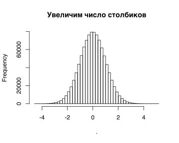

Урок 1 - Нормальное распределение
2019.10.22
suppressPackageStartupMessages(library(tidyverse)) # много всего полезного (пайплайны и т.п.)
suppressPackageStartupMessages(library(magrittr)) # еще пайплайны
library(ggpubr) # графикиРасмотрим примеры использования функции rnorm для генерации нормально распределенных случайных чисел.
# rnorm - генерация рандомных ([r]andom) значений
rnorm(5)## [1] -0.9724969 0.1319870 0.3728185 -0.1970624 0.8471452rnorm(60, mean=30, sd=10)## [1] 31.373625 44.581558 45.366807 24.124308 37.214021 19.687192 23.060486
## [8] 39.006377 54.961924 22.768935 18.701417 30.262776 31.591166 28.199860
## [15] 36.283682 32.195830 43.110714 49.103880 46.752816 32.373764 30.454838
## [22] 9.386792 35.446839 34.888300 30.719274 34.116260 33.400703 24.458843
## [29] 41.250185 25.839549 18.030714 28.826934 14.659390 27.159172 27.507007
## [36] 50.301175 16.342536 49.706815 32.830659 24.340606 11.152961 36.844372
## [43] 16.483309 22.765762 26.444655 37.915516 48.233150 36.110891 23.370724
## [50] 23.464873 24.641342 52.326074 33.196887 32.809535 22.203069 24.345806
## [57] 26.863757 24.154037 41.090770 37.892993my_var = 7
rnorm(10, mean=-3, sd=sqrt(my_var))## [1] -2.9032378 -3.2751739 -2.3155137 -5.9822984 0.5687852 0.4972377
## [7] -5.3359202 -2.4918149 -0.4205350 -3.40685531e6 == 1000000## [1] TRUErnorm(1e6) %>% hist()rnorm(1e6) %>% hist(50, main = 'Увеличим число столбиков')
Высота столбиков гистограммы в данном случае означает количество наблюдений (точек), попавших в заданных диапазон (числа по оси х - границы этих диапазонов). Аналогично мы сами могли бы разбить весь диапазон значений на промежутки и посчитать количество значений в каждом.
set.seed(2)
x = rnorm(60, mean=30, sd=10)
x## [1] 21.030855 31.848492 45.878453 18.696243 29.197482 31.324203 37.079547
## [8] 27.603020 49.844739 28.612130 34.176508 39.817528 26.073046 19.603310
## [15] 47.822290 6.889309 38.786046 30.358067 40.128287 34.322652 50.908192
## [22] 18.000742 45.896382 49.546516 30.049378 5.482936 34.772373 24.034418
## [29] 37.922033 32.896367 37.389386 33.189604 40.761644 27.158423 22.233247
## [36] 24.043395 12.740202 20.974155 24.409381 27.534874 26.164138 10.408968
## [43] 21.582949 49.035475 36.224939 49.909204 26.945163 29.091558 28.158385
## [50] 18.012322 21.617129 50.663014 24.377529 42.757155 19.524274 10.341218
## [57] 26.770289 39.358625 41.392298 46.716188# функция cut превращает численные значения в категории,
# соответствующие диапазону, в который попало значение;
# мы можем задать границы, либо количество диапазонов
x_caterogies = cut(x, breaks = (0:6)*10)
x_caterogies## [1] (20,30] (30,40] (40,50] (10,20] (20,30] (30,40] (30,40] (20,30]
## [9] (40,50] (20,30] (30,40] (30,40] (20,30] (10,20] (40,50] (0,10]
## [17] (30,40] (30,40] (40,50] (30,40] (50,60] (10,20] (40,50] (40,50]
## [25] (30,40] (0,10] (30,40] (20,30] (30,40] (30,40] (30,40] (30,40]
## [33] (40,50] (20,30] (20,30] (20,30] (10,20] (20,30] (20,30] (20,30]
## [41] (20,30] (10,20] (20,30] (40,50] (30,40] (40,50] (20,30] (20,30]
## [49] (20,30] (10,20] (20,30] (50,60] (20,30] (40,50] (10,20] (10,20]
## [57] (20,30] (30,40] (40,50] (40,50]
## Levels: (0,10] (10,20] (20,30] (30,40] (40,50] (50,60]# теперь считаем количество в каждом диапазоне
x_caterogies %>% table()## .
## (0,10] (10,20] (20,30] (30,40] (40,50] (50,60]
## 2 8 20 16 12 2# настраиваем график по своему желанию
x %>%
hist(breaks = (0:6)*10,
main = "Задаем границы сами",
xlab = "Шкала значений признака",
ylab = "Число наблюдений в каждом диапазоне",
col = "lightgray",
border = "gray",
labels = T,
ylim = c(0,21)
)Кроме того, мы можем по оси Y отложить не абсолютные (конкретные числа), а относительные представленности разных значений. Площадь каждого столбца равна доле значений из данного диапазона (эмпирическая вероятность встреть такое значение в выборке). Сумма площадей (как и вероятностей) равна 1.
# числа наблюдений в каждой категории (см. выше)
counts = x_caterogies %>% table()
counts## .
## (0,10] (10,20] (20,30] (30,40] (40,50] (50,60]
## 2 8 20 16 12 2# числа, пересчитанные в доли (площади столбцов); в сумме == 1
counts / sum(counts) ## .
## (0,10] (10,20] (20,30] (30,40] (40,50] (50,60]
## 0.03333333 0.13333333 0.33333333 0.26666667 0.20000000 0.03333333# доли, деленные на ширину диапазона (= высота столбцов - плотность вероятности)
counts / sum(counts) / 10## .
## (0,10] (10,20] (20,30] (30,40] (40,50] (50,60]
## 0.003333333 0.013333333 0.033333333 0.026666667 0.020000000 0.003333333x %>%
hist(breaks = (0:6)*10,
col = "lightgray",
border = "gray",
freq = F,
main = "",
ylab = "Плотность вероятности",
xlab = "Шкала значений признака")Теперь по мере увеличения количества столбиков мы будем приближаться к теоретической кривой распределения.
x = rnorm(1e6, mean=10, sd=3)
par(mfrow=c(1,3))
x %>% hist(15, freq = F, main='15 столбиков')
x %>% hist(50, freq = F, main='50 столбиков')
x %>% hist(100, freq = F, border=NA, col="gray", main="100 столбиков + кривая")
# dnorm - плотность вероятности ([d]ensity)/правдоподобие/likelihood
curve(dnorm(x, 10, 3), from=-6, to=25, add=T, lwd=2)
Таким образом, функция плотности вероятности - это относительная мера встречаемости разных значений диапазона. Чтобы получить приблизительное значение вероятности, надо умножить плотность вероятности на ширину диапазона (точное значение - площадь под кривой плотности вероятности в данном диапазоне). Следовательно, вероятность конкретного значения - 0, т.к. ширина диапазона 0.
Функция dnorm позволяет находить плотность вероятности для каждого значения x.
# dnorm - плотность вероятности ([d]ensity)/правдоподобие/likelihood
curve(dnorm(x), from=-4, to=4)
abline(v = -1, col = "red", lty = "dashed")
abline(v = -2, col = "red", lty = "dotted")
abline(v = 0, col = "red", lty = "dotted")# относительная "встречаемость" значений в районе -1 (правдоподобие значения -1)
dnorm(-1)## [1] 0.2419707# приблизительная вероятность
dnorm(-1) * (0 - (-2))## [1] 0.4839414# pnorm - вероятность ([p]robability) того, что выборочное значение будет меньше данного значения Х
# вероятность, что значения в выборке будут в диапазоне [-2, 0]
pnorm(0) - pnorm(-2)## [1] 0.4772499Т.е. вероятность, что значения в корридоре [-2, 0] есть разность между вероятностью, что значения меньше 0, и вероятностью, что значения меньше -2.

Еще одна функция qnorm позволяет определить значения (квантили), которое разбивает ось значений на определенные отрезки. Квантиль - такое значение Х, что выборочные значения окажутся меньше его с вероятностью P.
# qnorm - квантиль ([q]uantile)
# Q: p( x < Q ) = P
P = c(0.25, 0.5, 0.75) # (1:n)/(n+1) - набор из n вероятностей, делящих [0, 1] на равные промежутки
n = 3; (1:n)/(n+1)## [1] 0.25 0.50 0.75n = 9; (1:n)/(n+1)## [1] 0.1 0.2 0.3 0.4 0.5 0.6 0.7 0.8 0.9qnorm((1:n)/(n+1))## [1] -1.2815516 -0.8416212 -0.5244005 -0.2533471 0.0000000 0.2533471
## [7] 0.5244005 0.8416212 1.2815516Для проверки на нормальность можно
смотреть на гистограмму
set.seed(1) n = 20 qe = log(rnorm(n, exp(5), exp(2))) %>% scale() %>% as.numeric() # некое распределение, которое будем анализировать qe %>% hist()смотреть QQ-plot
qqnorm(qe) qqline(qe)Однако, что значит не существенны? Надо посмотреть, как себя ведут реальные нормальные распределения и построить разбросы. Если точки неизвестного распределения существенно не отклоняются от точек реальных нормальных распределений, то отклонения от нормальности не существенны.
qt = qnorm((1:n) / (n + 1)) plot(qt, sort(qe), ylim = c(-3, 3), type = 'n') N = 1000 tl = matrix(nrow = N, ncol = n) for (i in 1:N) { tl[i, ] = sort(rnorm(n)) if (i %% 20 == 0) points(qt, tl[i, ], pch = 19, col = scales::alpha('black', .1)) } ci = apply(tl, 2, function(x) quantile(x, prob = c(0.05, 0.975))) arrows(qt, ci[1, ], qt, ci[2, ], length = 0.05, angle = 90, code = 3) points(qt, sort(rnorm(20)), pch = 19) points(qt, sort(qe), col = 'red', pch = 19) text(qt + 0.07, sort(qe) + 0.2, 1:20, col = 'red', cex = .8)Для этого есть и готовая функция. Чем меньше точек в выборке, тем шире разброс и тем больше любое распределение будет казаться нормальным.
ggpubr::ggqqplot(qe)- провести тест на нормальность (например,
shapiro.test)
shapiro.test(x) # результаты теста (распечатка) shapiro.test(x) %>% str() # структура самого объекта с результатами - список! shapiro.test(x)$p.value results = shapiro.test(x) results$p.valueПроведем симуляцию. При разных размерах выборки какую долю нормальных распределений тест будет считать ненормальными, а какую долю ненормальных он ошибочно будет принимать за нормальные?
# проверяем нормальность отдельно взятой симуляции set.seed(1) my_normal_sample = rnorm(20, 5, .22) my_not_normal_sample = log(abs(rnorm(20, exp(5), exp(3.5)))) # сравниваем мощность и специфичность при разных размерах выборки N = exp(seq(log(3), log(300), .05)) %>% round() %>% unique() # размер выборки normal_results = numeric(length(N)) not_normal_results = numeric(length(N)) n_replicas = 200 # повторов для каждого размера, чтобы определить мощность for (i in 1:length(N)){ for (j in 1:n_replicas){ normal_results[i] = normal_results[i] + (shapiro.test(rnorm(N[i], 5, .22))$p.value < 0.05) not_normal_results[i] = not_normal_results[i] + (shapiro.test(log(abs(rnorm(N[i], exp(5), exp(3.5)))))$p.value > 0.05) } } plot(N, normal_results/n_replicas, col='blue', ylim=c(0,1), ylab='Error rate') points(N, not_normal_results/n_replicas, col='magenta') abline(h=0.05, col='red', lty='dashed') legend("topright", c('Доля ненормальных, ошибочно названных нормальными', 'Доля нормальных, ошибочно названных ненормальными'), col = c('magenta', 'blue'), pch=c(1,1), cex=.8)Вывод: чем меньше выборка, тем меньше мощность у теста (тем хуже тест определяет ненормальность). При этом доля ошибочно нераспознанных нормальных распределений постоянна и составляет 0.05 (как мы и задали, это и есть уровень значимости).
- провести тест на нормальность (например,